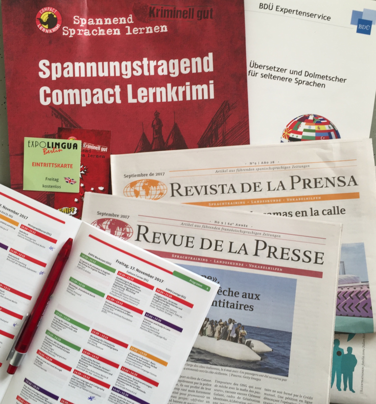

Today I attended the long-awaited international fair for languages and cultures ExpoLingua in Berlin. It’s a must event for anyone interested in language learning and teaching, because for two days (17-18 November) it brings 150+ exhibitors (language schools, travel operators, cultural institutes, publishing houses, translators, associations) from 30+ countries and offers workshops, presentations, crash-courses in different languages, performances, and moderated panel discussions, from five categories: languages and cultures, presentations for teachers, learn & travel, tests, and career.
So on Friday morning, for a start, I attended two crash courses in Hebrew and Indonesian, where I learned to introduce myself and write a few words. Honestly, the lessons weren’t really efficient because the courses took place in a corner next to a couple of exhibition stands, so the chatting in the background was disturbing and apart from that the instructors didn’t bring enough handouts. Nevertheless, I got a taste of these languages and I think I’ll continue learning Hebrew! My next stop was a talk about the language and culture of Latin America, with a focus on Colombia, then a Henna workshop, which I enjoyed most.
Afterwards I did a tour of the exhibitor stands, each luring visitors with goodie bags and colorful flyers about volunteering opportunities in Argentina, language trips in Japan, study programs in the UK, and many other countries. I discovered a cool app Beelinguapp for learning languages with audiobooks, karaoke animations, and side-by-side reading; learned about the exam and registration process in the German Association of Interpreters and Translators; added some Spanish crime comics to my reading list; learned a bit of Ido, a constructed language derived from Esperanto; “visited” Guatemala, the special guest country; and finally stopped for a coffee at ExpoCafé.
At the end of the day, I felt like I’ve traveled around the world in a couple of hours and it was inspiring to see the linguistic and cultural diversity of our world!